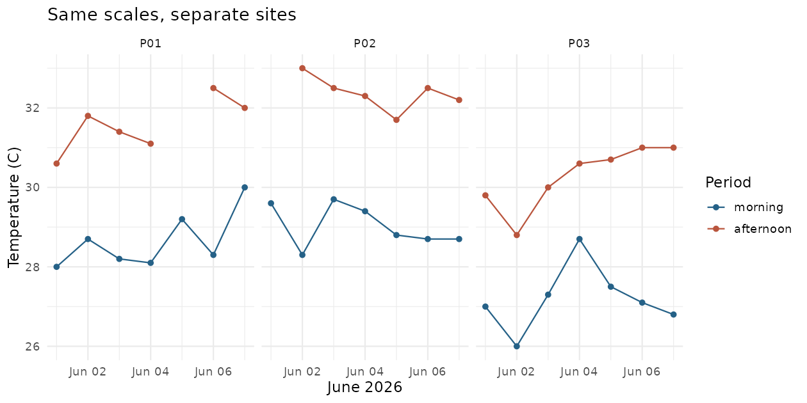

第 21 节 · 图形广场
把时间与地点分开看
同一张图里的点，应该怎样连线？
正确指定线的分组，使用分面比较地点并说明缺失。
本节目录
运行位置：打开练习包内的 r-lab.Rproj，在项目根目录运行本节脚本。安装与准备见第 02—04 节；第 13 节说明扩展包。
先确定哪一些点属于同一条线
回到一周的重复观察。我们想看每个地点上午、下午随日期变化的温度，因此一条线应属于同一个地点的同一个时段。图中用地点分面，再让 group = period 指定面板内两条线。
# 数据调查小镇 · 第 21 节
# 在 r-lab 项目根目录运行；输出只写入 results。
suppressPackageStartupMessages(library(dplyr))
suppressPackageStartupMessages(library(ggplot2))
x <- read.csv("data/observations.csv", stringsAsFactors = FALSE) |> distinct()
x$date <- as.Date(gsub("/", "-", x$date))
x$period <- factor(x$period, levels = c("morning", "afternoon"))
p <- ggplot(x, aes(date, temperature_c, colour = period, group = period)) + geom_line(na.rm = TRUE) + geom_point(na.rm = TRUE) + facet_wrap(~ site_id, nrow = 1) + scale_colour_manual(values = c("#256187", "#b9553d")) + labs(x = "June 2026", y = "Temperature (C)", colour = "Period", title = "Same scales, separate sites") + theme_minimal(base_size = 12)
dir.create("results", showWarnings = FALSE)
ggsave("results/21-trends.png", plot = p, width = 9, height = 4.5, dpi = 140)
print(c(records = nrow(x), missing_temperature = sum(is.na(x$temperature_c)))) records missing_temperature
42 2R 实际生成 · 同一尺度下的三处地点

每幅面板代表一个地点，两种颜色分别表示上午与下午。图中缺失温度没有被补齐，同一地点的点是重复观察。
放大查看 ↗ · 下载图片 ↓连线隐含了一种关系
geom_line() 按横轴顺序连接同一组的记录。它让时间趋势容易追踪，却不表示相邻测量之间真的被连续监测。如果横轴只是没有自然顺序的地点名称，连成一条线往往会制造并不存在的过程感。
本例先处理完全重复行和日期格式，再绘图。上午、下午用因子规定图例顺序。先整理、再画图，能让绘图语法保持清楚。
分面像并排打开几页记录
分面把同一画法用于不同子集。facet_wrap(~ site_id) 为每个地点创建一个面板，默认使用相同坐标范围，便于比较真实的高度差。如果采用各自缩放的自由坐标，要明确告知读者，否则视觉上的高低可能失去可比性。
正文有多个图形时，应保持相同地点或时段的配色含义。需要时再加线型、点形或直接标注，让颜色不是唯一的信息通道。
缺失没有被图悄悄补好
本批数据有两条温度缺失。na.rm = TRUE 避免重复打印绘图警告，但未把缺失值变成观测。应保留缺失数量，并检查缺口在图上的表现；线与点的显示不等于进行了插值。
这幅图是对现有记录的描述。一天的上午和下午、同一地点相邻日期之间都可能有关系，因此后面不会直接把它们当作独立样本去做最简单的两组检验。
动手试试
一条线的归属
如果把所有地点都放到一个面板，却只设置 group = period，会发生什么风险？
给我一点提示
同一时段会包含多个地点的记录。
查看参考解法与解释
线可能把不同地点的点连接在一起，产生不属于任何一个地点的轨迹。应同时考虑地点与时段的分组，或保持地点分面。
带走这一点
下一节继续沿地图向前。也可以先修改本节例子中的一个值，解释输出为什么变化。
检查一下理解
比较不同地点的绝对温度，默认统一坐标有什么好处？
查看解释
统一比例尺保证面板之间的数值位置可比较。